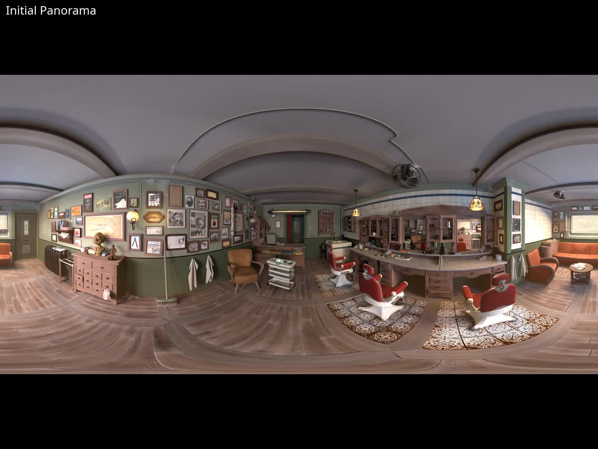
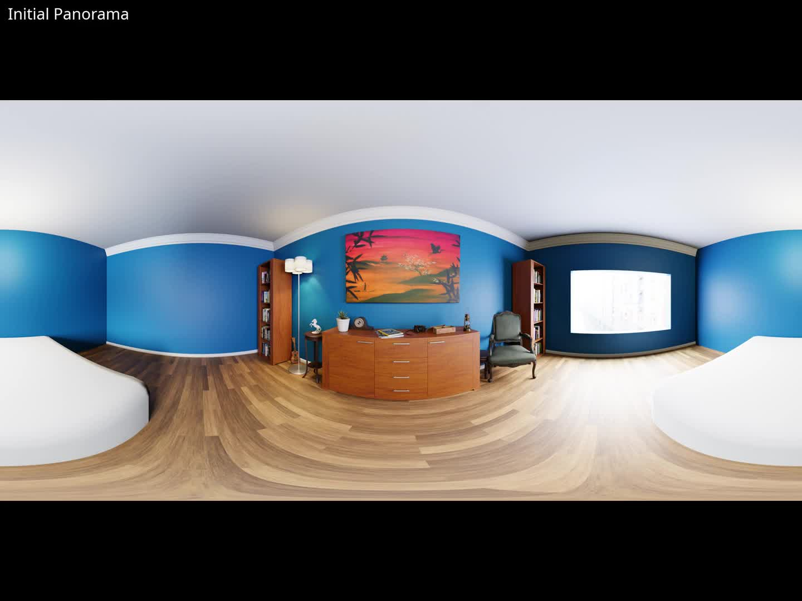
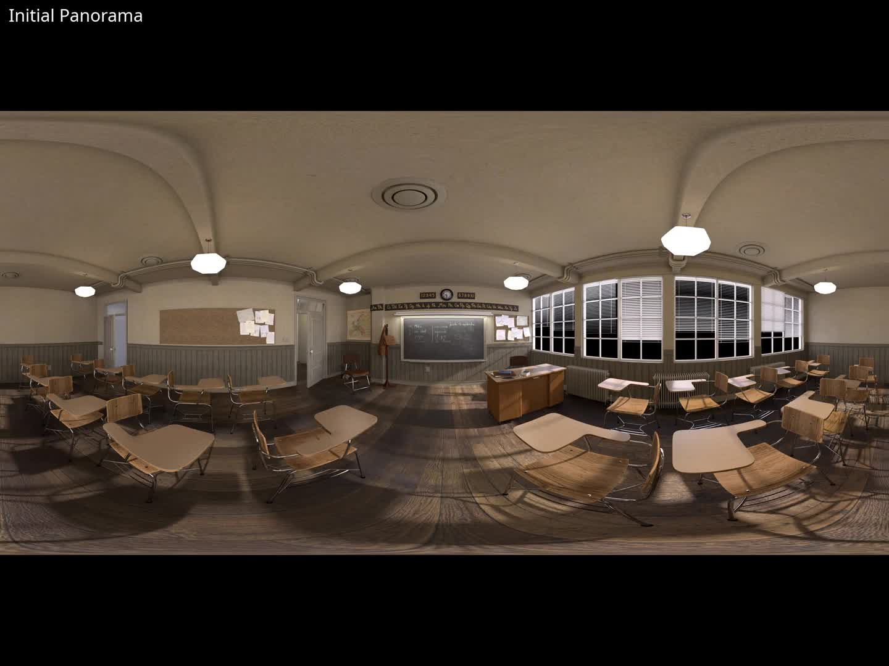
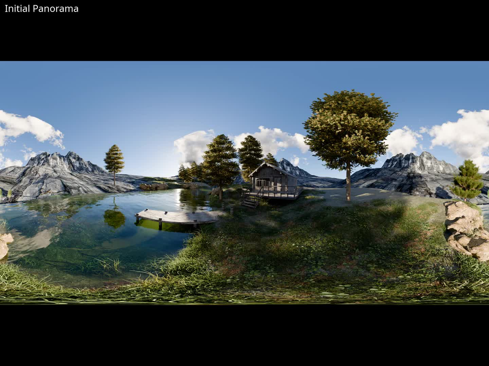
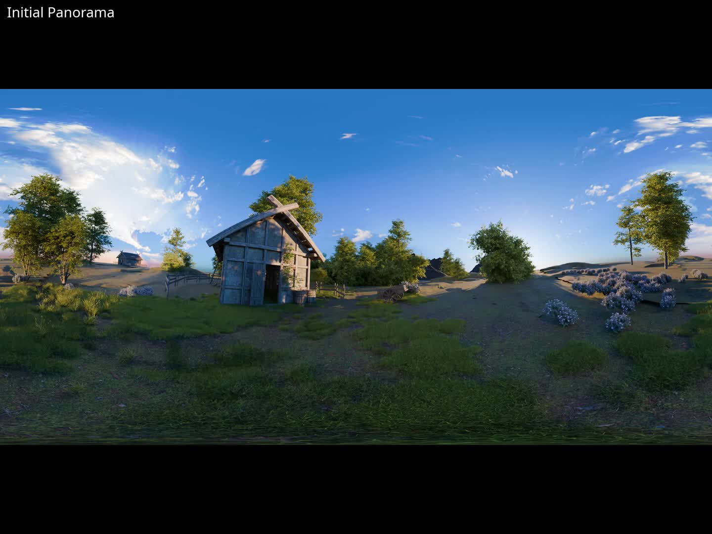
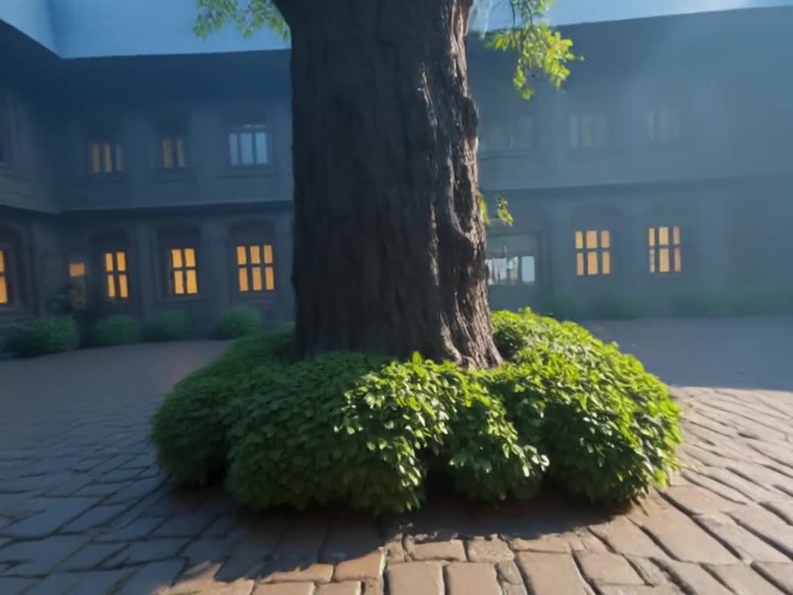
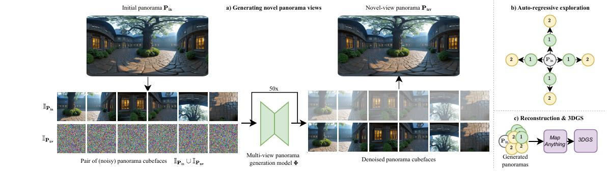
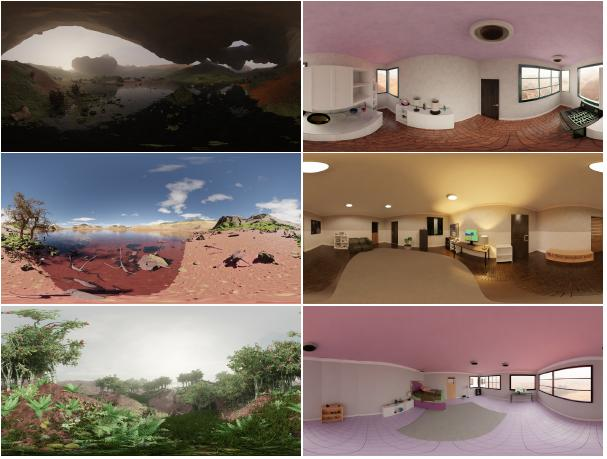

The synthesis of immersive 3D scenes from text is rapidly maturing, driven by novel video generative models and feed-forward 3D reconstruction, with vast potential in AR/VR and world modeling. While panoramic images have proven effective for scene initialization, existing approaches suffer from a trade-off between visual fidelity and explorability: autoregressive expansion suffers from context drift, while panoramic video generation is limited to low resolution. We present Stepper, a unified framework for text-driven immersive 3D scene synthesis that circumvents these limitations via stepwise panoramic scene expansion. Stepper leverages a novel multi-view 360° diffusion model that enables consistent, high-resolution exploration, coupled with a geometry reconstruction pipeline that enforces geometric coherence. Trained on a new large-scale, multi-view panorama dataset, Stepper achieves state-of-the-art fidelity and structural consistency, outperforming prior approaches, thereby setting a new standard for immersive scene generation.
Baseline comparisons showing Stepper vs. existing methods





Qualitative examples: Stepper flythroughs

Stepper follows a four-stage pipeline for immersive scene generation:

Method pipeline: From input panorama to stepwise 3D scene generation
We introduce a large-scale synthetic dataset for training panorama-based scene generation:

Dataset visualization showing Infinigen-generated scenes with panoramic views
Stepper consistently outperforms baseline methods across all evaluation metrics:
Detailed quantitative comparisons are provided in the paper.
@misc{wimbauer2026stepper,
title={Stepper: Stepwise Immersive Scene Generation with Multiview Panoramas},
author={Wimbauer, Felix and Manhardt, Fabian and Oechsle, Michael and Kalischek, Nikolai and Rupprecht, Christian and Cremers, Daniel and Tombari, Federico},
year={2026},
eprint={2603.xxxxx},
archivePrefix={arXiv},
primaryClass={cs.CV}
}
We thank the open-source community for providing the Infinigen, MapAnything, and 3D Gaussian Splatting frameworks that made this work possible.